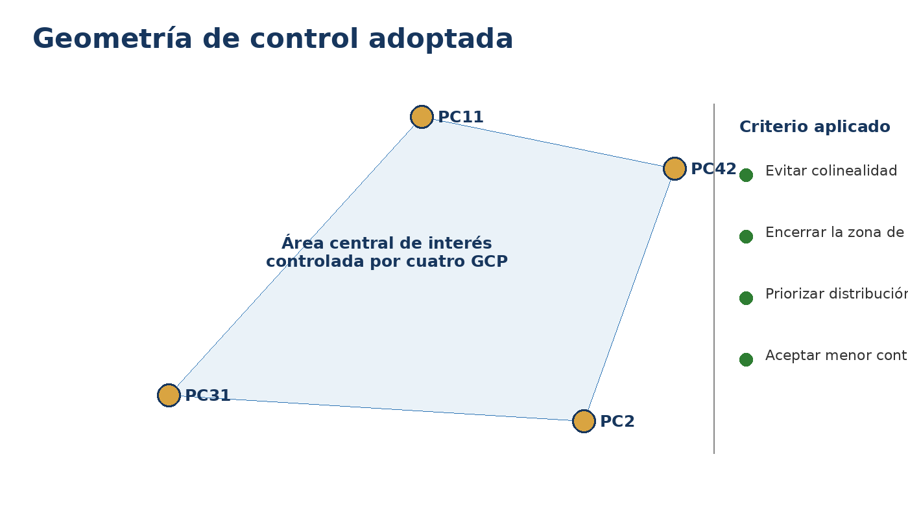
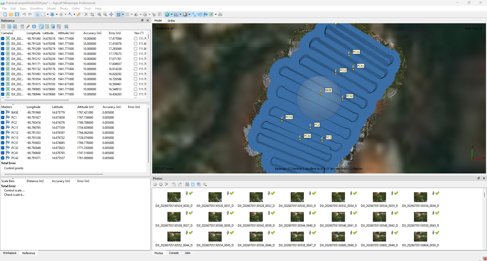

Qué se realizó en esta etapa
Se incorporaron los puntos GNSS, se verificó cuidadosamente el sistema de referencia y se seleccionaron cuatro puntos de control —PC2, PC11, PC31 y PC42— por su distribución alrededor del área central de interés. Con ellos se optimizaron las cámaras mediante un modelo de calibración parsimonioso, refinando la posición, orientación y parámetros internos sin introducir complejidad innecesaria.

Geometría conceptual de los GCP.

Puntos de control sobre el bloque.
Modelo de calibración
fcx, cyk1, k2, k3p1, p2
k4, b1, b2 y opciones avanzadas se dejaron desactivadas para evitar complejidad y sobreajuste sin evidencia de residuos sistemáticos.

Resultado de la optimización inicial.